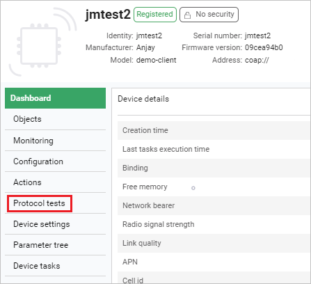
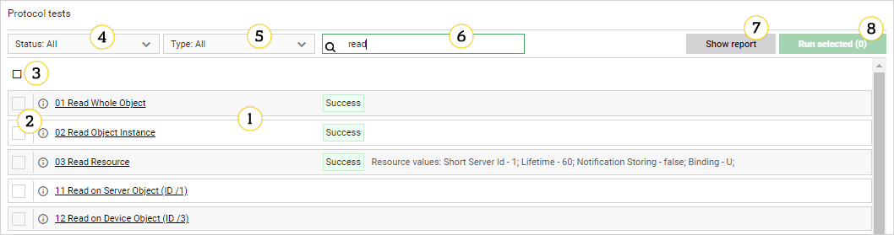

Running test cases#
If you have test cases configured in the platform, you can run them on your device using the Protocol tests panel. Read this chapter to learn how to display test case descriptions, start and stop test case execution and view test results and logs.
Protocol tests panel description#
The protocol tests panel is available in the Device Management Center individually for each device. To access it, select a device in Device Inventory to enter its Device Management Center and select Protocol tests from the menu on the left.
Tip
If the Protocol tests tab is not visible in the menu, use the settings button under the menu to add it: drag it from Available tabs and drop it in Selected tabs and click Confirm.

Read this section to learn about the main components that it comprises.

- Test case list – views all the test cases available for a given device. It is searchable and can be filtered.
- Info icon – hover over this icon to see test case description.
- 'Select all' checkbox – use this checkbox to select all items visible in the list. Note that if you filter or search the list, the previously made selection you will be kept nonetheless. In such case, the number of selected test cases visible in the Run selected button will be their total count, which may not correspond to the number of selections in your filtered list view.
- Status – use this field to filter your list view by test case execution status.
- Type - use this field to filter your list view by test case type (Automated or Semi-manual).
- Search – use this field to search among the listed test cases by their name. Start typing to get matching results.
- Show report - use this button to view a summary of tests commissioned for your devices along with test case success rate. To get the report in the CSV format, select the Download summary file button.
- 'Run selected (_)' button – use it to start the execution of previously selected tests. The number of tests to be run is shown in brackets.
Displaying test case description#
Read this section to learn how to display details of test cases.
- In Device Inventory, find your device in the list and click on its name.
- In Device Management Center, select the Protocol tests tab.
- Select a test case and click on its name to enter the detailed view.
Starting test cases#
Read this section to learn how to start the execution of test cases on a device.
- In Device Inventory, find your device in the list and click on its name.
- In Device Management Center, select the Protocol tests tab.
- Select the test cases you want to run and click Run selected (_).
Note
Even if you leave the Protocol tests panel, tests once run will continue until all are finished or stopped.
Stopping test cases#
Read this section to learn how to stop the execution of test cases on a device.
- With the tests running, go to Device Inventory.
- Find your device in the list and click on its name.
- In Device Management Center, select the Protocol tests tab.
- Click the Cancel all tests button located inside the footer bar.
- Test execution will be stopped.
Note
Tests completed before you hit the Cancel all tests button will display their execution status.
Test case statuses and logs#
Test case statuses#
Test case statuses are labels attached to test cases that help to identify their state in each stage of their execution. There are eight available test case statuses:
- New – a test case that has been recently added and has not been scheduled nor executed.
- NotScheduled – a test case that has never been picked for execution.
- NotTested – a test case that has been picked for execution, but its execution has not started due to some error or test case execution interruption.
- Pending – a test case whose execution is pending.
- In progress – a test case whose execution is under way.
- Halted – a test case whose execution is under way.
- Warning – a test case that has finished with error(s).
- Success – a test case that has finished with success.
Tip
Statuses are available both for test cases after execution as well as for individual actions inside a test case. To view test results for individual actions, enter the finished test case and see the action list.
Test case logs#
Logs store detailed information on the test case execution and can be displayed after its completion. To display the logs for an individual test case, enter the test case and click Check logs or expand the Logs list.
- If there are many logs from a selected period of time, use Scroll to the bottom and Scroll to the top links to navigate.
- If a log entry is long, not all lines are displayed at once. To see more lines, click the Show … lines/characters more link.
- To display only particular logs and logs of a higher level, use Show from level list.
- To wrap words of logs, select the Word wrap checkbox.
- To format messages in a more readable way, select the Format messages checkbox.
- To see which messages were received (green color) and which were sent (blue color), select the Color messages checkbox.
- To download logs from a particular period of time matching with used filters, click the Download button.